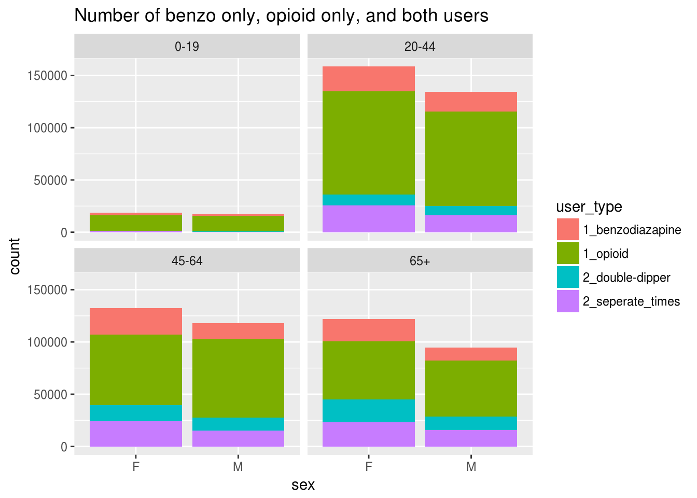
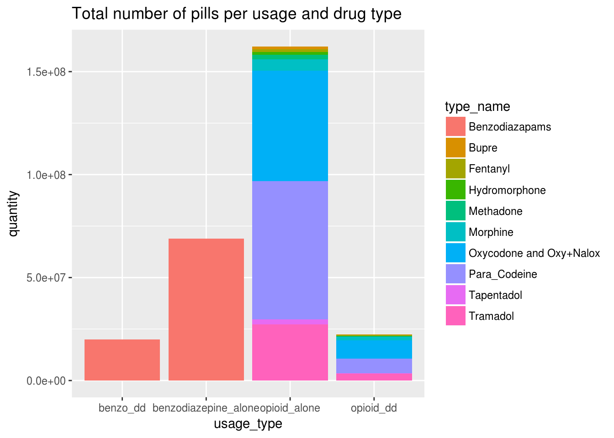
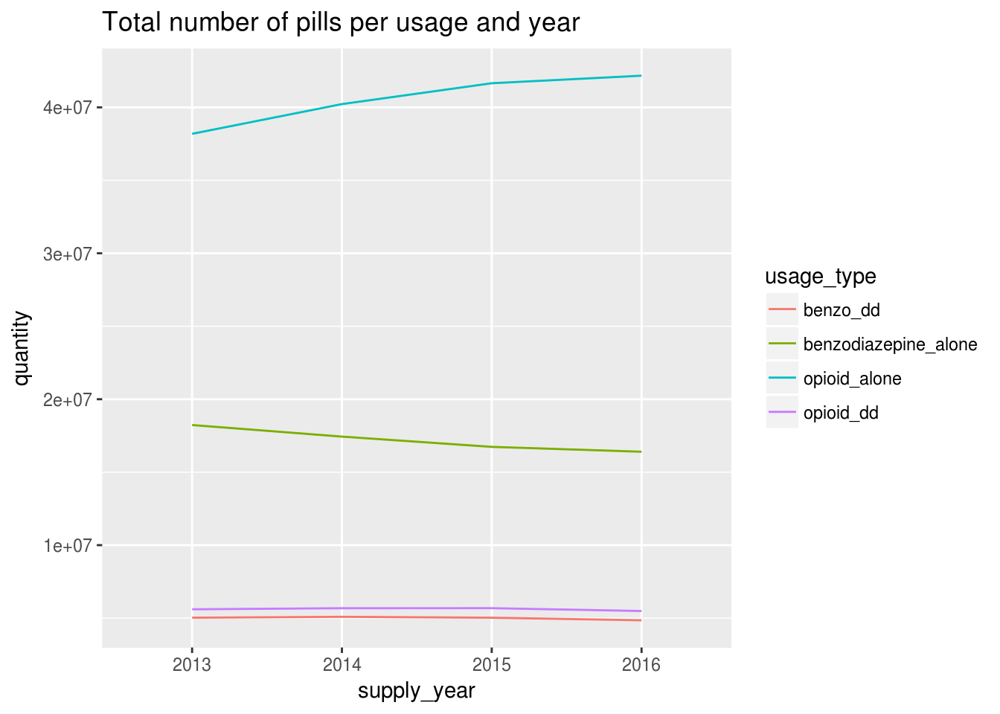
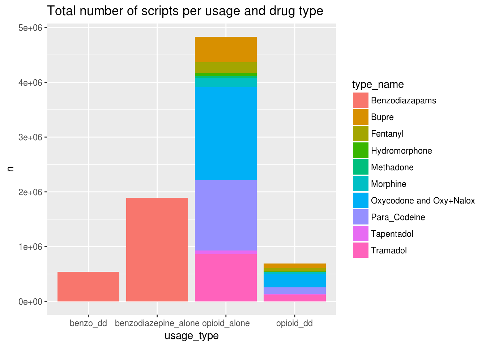
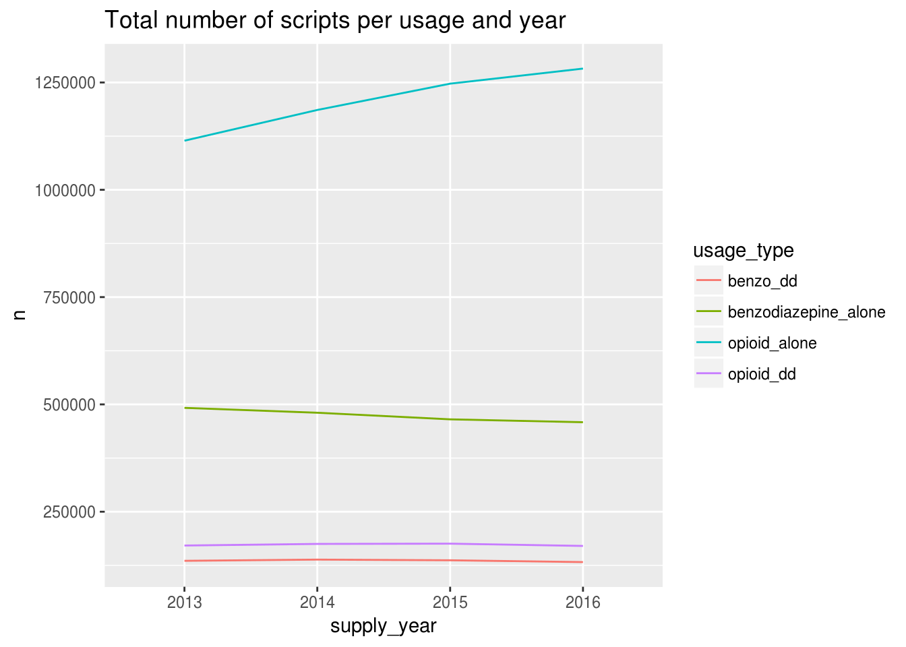
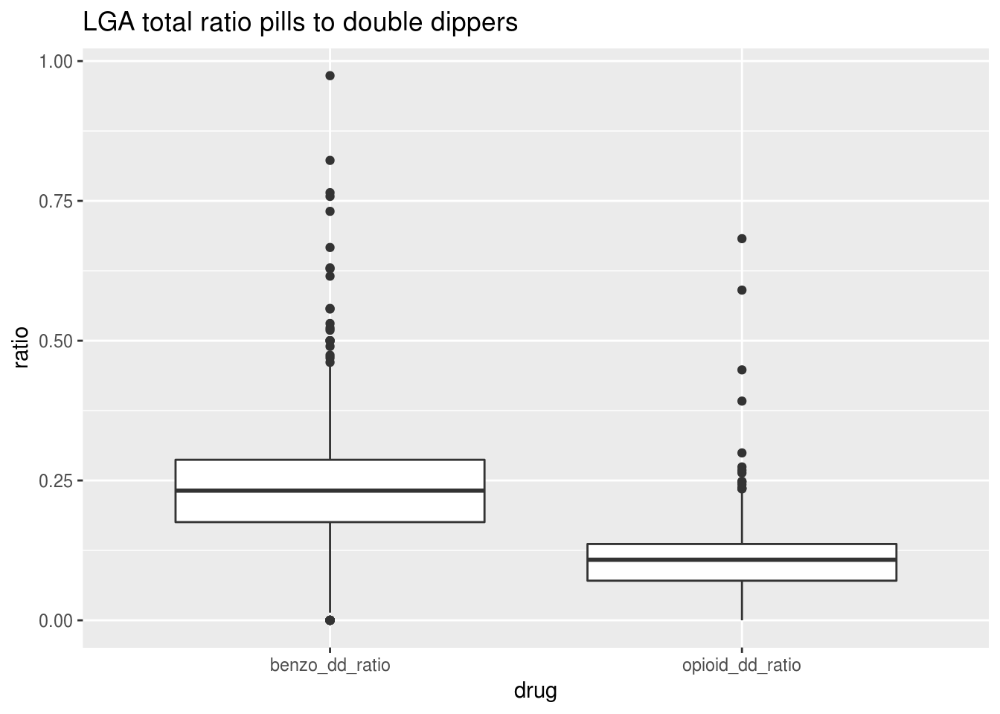
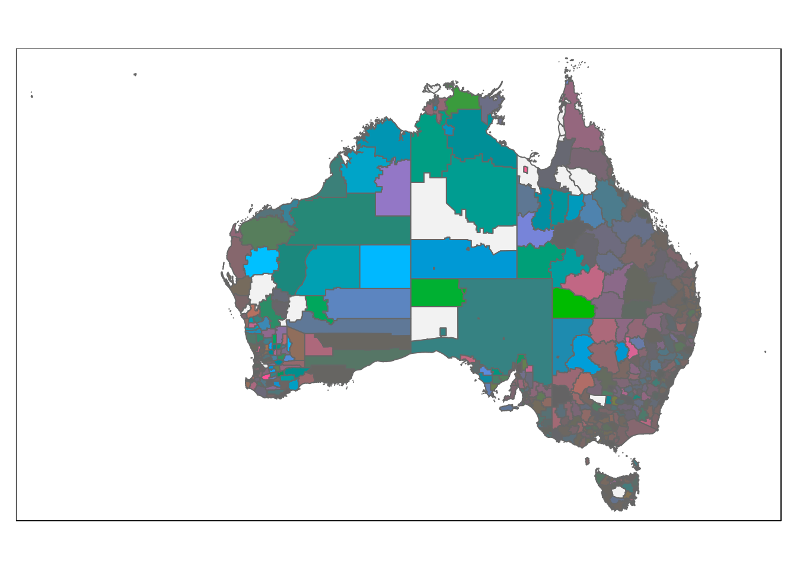

Barbituate 1
Mofi Islam and Dennis Wollersheim
2018-04-30
Last updated: 2018-09-06
workflowr checks: (Click a bullet for more information)-
✔ R Markdown file: up-to-date
Great! Since the R Markdown file has been committed to the Git repository, you know the exact version of the code that produced these results.
-
✔ Environment: empty
Great job! The global environment was empty. Objects defined in the global environment can affect the analysis in your R Markdown file in unknown ways. For reproduciblity it’s best to always run the code in an empty environment.
-
✔ Seed:
set.seed(20180719)The command
set.seed(20180719)was run prior to running the code in the R Markdown file. Setting a seed ensures that any results that rely on randomness, e.g. subsampling or permutations, are reproducible. -
✔ Session information: recorded
Great job! Recording the operating system, R version, and package versions is critical for reproducibility.
-
Great! You are using Git for version control. Tracking code development and connecting the code version to the results is critical for reproducibility. The version displayed above was the version of the Git repository at the time these results were generated.✔ Repository version: 31aa02e
Note that you need to be careful to ensure that all relevant files for the analysis have been committed to Git prior to generating the results (you can usewflow_publishorwflow_git_commit). workflowr only checks the R Markdown file, but you know if there are other scripts or data files that it depends on. Below is the status of the Git repository when the results were generated:
Note that any generated files, e.g. HTML, png, CSS, etc., are not included in this status report because it is ok for generated content to have uncommitted changes.Ignored files: Ignored: analysis/figure/ Ignored: data/cache/ Ignored: docs/figure/
Expand here to see past versions:
| File | Version | Author | Date | Message |
|---|---|---|---|---|
| Rmd | 31aa02e | Dennis Wollersheim | 2018-09-06 | wflow_publish(“analysis/analysis.Rmd”) |
| Rmd | 49495a9 | Dennis Wollersheim | 2018-08-25 | label r code sections |
| Rmd | fac1f23 | Dennis Wollersheim | 2018-08-25 | fixed bug in date+pills calculation code; added sanity checks |
| Rmd | cbf2fd4 | Dennis Wollersheim | 2018-08-25 | moved intersect cache files to intersect |
| Rmd | ba80fc7 | Dennis Wollersheim | 2018-08-25 | changed intersection to take tablet n into account |
| Rmd | 7eadecb | Dennis Wollersheim | 2018-08-21 | comments edit |
| Rmd | 9584023 | Dennis Wollersheim | 2018-08-21 | So that code runs on secondary machine |
| Rmd | 44e48f8 | Dennis Wollersheim | 2018-08-03 | Added shiny app to explore tricolore map |
| html | 6b416ba | Dennis Wollersheim | 2018-07-25 | Build site. |
| Rmd | 55a56f3 | Dennis Wollersheim | 2018-07-25 | wflow_publish(“analysis/analysis.Rmd”) |
| html | e7dd803 | Dennis Wollersheim | 2018-07-25 | Build site. |
| Rmd | 80cc0eb | Dennis Wollersheim | 2018-07-25 | wflow_publish(“analysis/analysis.Rmd”) |
| Rmd | 24fa29d | Dennis Wollersheim | 2018-07-24 | Full build, for mofi v1 |
| html | 24fa29d | Dennis Wollersheim | 2018-07-24 | Full build, for mofi v1 |
| Rmd | 6a64a30 | Dennis Wollersheim | 2018-07-20 | wflow_publish(“analysis/analysis.Rmd”) |
| html | 0c83d40 | Dennis Wollersheim | 2018-07-20 | Build site. |
| Rmd | 148e3e9 | Dennis Wollersheim | 2018-07-20 | wflow_publish(“analysis/analysis.Rmd”) |
rm(list=ls())
options(width = 200)
show_code = FALSE
source("lib/functions.R")
source("lib/standardisation.R")
source("lib/get_data.R")
source("lib/generate_data_frames.R")
library('tidyverse')
dataset="_rr"
dataset=""
get_data_from_cache(df_suffix = dataset)
intersect_filename = paste0( 'data/cache/df_intersect', dataset, '.rdata')
df_population %>% distinct( lga, seifa ) -> df_seifa
df_population %>% distinct( lga, urbanization ) -> df_urbanization
df %<>% mutate( row=row_number())
df %>%
filter( is_benzo( type_code ) ) %>%
{ . } -> df_benzo
df %>%
filter( !is_benzo( type_code ) ) %>%
{ . } -> df_opioid
df_patient_opioid = df_patient %>% filter( pin %in% df_opioid$pin)
df_patient_benzo = df_patient %>% filter( pin %in% df_benzo$pin)Methods
Condervative Assumptions
- we take all the people who have had benzo and opioid, and we intersect them
- for each prescription, we assume the following behaviour.
| Type | Treatment |
|---|---|
| Patches | Continuious usage for number of days reccomended for each patch |
| Injections | Continious usage at the adult daily reccomended dose |
| tablets | 2 tablets /day |
We estimate prescription comsumption window by assuming that the user takes the prescription daily from the time they fill their prescription until it runs out, given consumption factors the the table above, and the quantity of items in the prescription.
Using the consumption window calculated above, we deem someone is taking opioids concurrently with benzodiazepine if they have an opioid window overlapping with benzodiazepine window, with at least 7 days of overlap.
Dataset summary
There are more opioid prescriptions and users than Benzodiazepine users
Total Number of Scripts with either Benzo or Opioid
| state | n |
|---|---|
| ACT | 93363 |
| NSW | 2263956 |
| NT | 31697 |
| QLD | 1761369 |
| SA | 700859 |
| TAS | 247103 |
| VIC | 2115422 |
| WA | 748117 |
Total Number of People with either Benzo or Opioid
| state | n |
|---|---|
| ACT | 11859 |
| NSW | 232882 |
| NT | 5229 |
| QLD | 169598 |
| SA | 61068 |
| TAS | 19270 |
| VIC | 210681 |
| WA | 84912 |
Total Number of People with Opioid
[1] “people”
| state | n |
|---|---|
| ACT | 9992 |
| NSW | 197521 |
| NT | 4613 |
| QLD | 143153 |
| SA | 52210 |
| TAS | 16261 |
| VIC | 177843 |
| WA | 72710 |
Total Number of People with Benzo
[1] “people”
| state | n |
|---|---|
| ACT | 4394 |
| NSW | 90051 |
| NT | 1644 |
| QLD | 73956 |
| SA | 25506 |
| TAS | 8458 |
| VIC | 88498 |
| WA | 32709 |
Methods - find overlaps
if (file.exists( intersect_filename )) {
load( intersect_filename, verbose=TRUE )
} else {
#
df %>%
filter( is_benzo( type_code ) ) %>%
group_by(pin) %>%
mutate( end_date = supply_date + floor(quantity * new_days_multiplier)) %>%
select( pin, item_code, quantity, n_dose, supply_date, end_date, row) %>%
nest( item_code, supply_date, end_date, quantity, n_dose, row, .key=benzo ) %>%
{ . } -> df_benzo_nested
#
df %>%
filter( !is_benzo( type_code ) ) %>%
group_by(pin) %>%
mutate( end_date = supply_date + floor(quantity * new_days_multiplier)) %>%
select( pin, item_code, quantity, n_dose, supply_date, end_date, row) %>%
nest( item_code, supply_date, end_date, quantity, n_dose, row, .key=opioids ) %>%
{ . } -> df_opioid_nested
#
library('IRanges')
#
#
# df_benzo_nested %>%
# inner_join( df_opioid_nested ) %>%
# group_by(pin) %>%
# do( joined = interval_inner_join( .$opioids, .$benzo, by=qw('supply_date end_date') )) %>%
# unnest() %>%
# { . } -> df_intersect
#
#
no_cores <- detectCores() - 1
cluster <- create_cluster(no_cores)
df_benzo_nested %>%
inner_join( df_opioid_nested ) %>%
partition(pin, cluster=cluster ) %>%
{ . } -> df_both
#
cluster_library(df_both, c("tidyverse", "IRanges", "fuzzyjoin"))
#
df_both %>%
do( joined = interval_inner_join( data.frame(.$opioids),
data.frame(.$benzo),
by=c('supply_date','end_date') )) %>%
collect() %>%
ungroup() %>%
unnest() %>%
mutate( supply_year = year( supply_date.x)) %>%
{ . } -> df_intersect
#
save(df_intersect, file=intersect_filename)
}Loading objects:
df_intersect#cl <- makeCluster("thealfred.duckdns.org", user="dewoller", master="131.172.55.229", homogeneous=FALSE)break prescriptions into 4 distinct usage types;
opioid_dd - opioid with a benzodiazepine overlapping
benzo_dd - benzodiazepine with an opioid overlapping
opioid_alone - opioid with no overlap
benzo_alone - benzodiazepine with no overlap
df %<>% mutate( usage_type = as.factor(
ifelse( row %in% df_intersect$row.x,
'opioid_dd',
ifelse( row %in% df_intersect$row.y,
'benzo_dd',
paste0( drug_type, '_alone') ))))What do the group of double dippers look like
We need to have some measure of dd intensity, we could use: * compare them with the single dippers, e.g. as percentage of single opioid users * on their own, e.g by DDD, or by # of days of overlap
Questions
- how to normalise data;
- further research questions; what about users that overlap with their own opioid prescriptions
df_intersect %>%
distinct(pin) %>%
inner_join(df_patient) %>%
ggplot(aes(age, fill=sex)) + geom_bar() +
ggtitle( "Number of double dippers by gender and age group")Joining, by = "pin"
Expand here to see past versions of explore_overlap-1.png:
| Version | Author | Date |
|---|---|---|
| 24fa29d | Dennis Wollersheim | 2018-07-24 |
| 0c83d40 | Dennis Wollersheim | 2018-07-20 |
df_intersect %>%
distinct(pin) %>%
inner_join(df_patient_usage) %>%
inner_join(df_patient) %>%
ggplot(aes(age, fill=usage_category)) + geom_bar() +
ggtitle( "Number of double dippers by opioid usage_category and age group")Joining, by = "pin"
Joining, by = "pin"
Expand here to see past versions of explore_overlap-2.png:
| Version | Author | Date |
|---|---|---|
| e7dd803 | Dennis Wollersheim | 2018-07-25 |
| 24fa29d | Dennis Wollersheim | 2018-07-24 |
| 0c83d40 | Dennis Wollersheim | 2018-07-20 |
df_intersect %>%
inner_join(df_patient_usage %>% filter( drug_type=='opioid')) %>%
inner_join(df_patient) %>%
ggplot(aes(supply_year, fill=usage_category)) + geom_bar() +
ggtitle( "Number of double dippers by opioid usage_category and supply_year")Joining, by = "pin"
Joining, by = "pin"
Expand here to see past versions of explore_overlap-3.png:
| Version | Author | Date |
|---|---|---|
| e7dd803 | Dennis Wollersheim | 2018-07-25 |
| 24fa29d | Dennis Wollersheim | 2018-07-24 |
| 0c83d40 | Dennis Wollersheim | 2018-07-20 |
df%>%
ggplot(aes(supply_year, fill=drug_type)) +
geom_bar() +
ggtitle( "Number of benzo and/or opioid scripts by supply_year")
what type of users do we have
number of users of each type, overall

Prescriptions that participate in double dipping
df %>%
group_by( usage_type, type_name) %>%
summarise( quantity=sum(quantity) ) %>%
ggplot( aes( usage_type, quantity, fill=type_name)) +
geom_col()+
ggtitle( "Total number of pills per usage and drug type")
df %>%
group_by( usage_type, supply_year) %>%
summarise( quantity=sum(quantity) ) %>%
ggplot( aes( supply_year, quantity, color=usage_type, group=usage_type)) +
geom_line()+
ggtitle( "Total number of pills per usage and year")
df %>%
count( usage_type, type_name) %>%
ggplot( aes( usage_type, n, fill=type_name)) +
geom_col()+
ggtitle( "Total number of scripts per usage and drug type")
df %>%
count( usage_type, supply_year) %>%
ggplot( aes( supply_year, n, color=usage_type, group=usage_type)) +
geom_line()+
ggtitle( "Total number of scripts per usage and year")
Percentage of population that participate in double dipping
# number of dd / total number per lga
df %>%
count( usage_type, lga ) %>%
spread( usage_type, n, fill=0) %>%
mutate( opioid_dd_ratio = opioid_dd / (opioid_dd + opioid_alone),
benzo_dd_ratio = benzo_dd / (benzo_dd + benzodiazepine_alone)) %>%
select( lga, ends_with('ratio')) %>%
gather( drug, ratio, -lga) %>%
ggplot( aes(drug, ratio)) +
geom_boxplot( ) +
ggtitle( "LGA total ratio pills to double dippers")
cat("Percentage of double dippers scripts for each Seifa area")Percentage of double dippers scripts for each Seifa areadf %>%
inner_join( df_seifa ) %>%
count( usage_type, seifa ) %>%
spread( usage_type, n, fill=0) %>%
mutate( opioid_dd_ratio = opioid_dd / (opioid_dd + opioid_alone),
benzo_dd_ratio = benzo_dd / (benzo_dd + benzodiazepine_alone)) %>%
select( seifa, ends_with('ratio')) %>%
gather( drug, ratio, -seifa) %>%
kable()Joining, by = "lga"| seifa | drug | ratio |
|---|---|---|
| Least | opioid_dd_ratio | 0.1550879 |
| Moderate | opioid_dd_ratio | 0.1654300 |
| High | opioid_dd_ratio | 0.1601349 |
| Very High | opioid_dd_ratio | 0.1665486 |
| NA | opioid_dd_ratio | 0.0377358 |
| Least | benzo_dd_ratio | 0.3005975 |
| Moderate | benzo_dd_ratio | 0.2950608 |
| High | benzo_dd_ratio | 0.2825151 |
| Very High | benzo_dd_ratio | 0.2227988 |
| NA | benzo_dd_ratio | 0.2857143 |
cat("Percentage of double dippers scripts for each Urbanization area")Percentage of double dippers scripts for each Urbanization areadf %>%
inner_join( df_urbanization) %>%
count( usage_type, urbanization ) %>%
spread( usage_type, n, fill=0) %>%
mutate( opioid_dd_ratio = opioid_dd / (opioid_dd + opioid_alone),
benzo_dd_ratio = benzo_dd / (benzo_dd + benzodiazepine_alone)) %>%
select( urbanization, ends_with('ratio')) %>%
gather( drug, ratio, -urbanization) %>%
kable()Joining, by = "lga"| urbanization | drug | ratio |
|---|---|---|
| Rural | opioid_dd_ratio | 0.1492184 |
| Urban | opioid_dd_ratio | 0.1637168 |
| Rural | benzo_dd_ratio | 0.3419099 |
| Urban | benzo_dd_ratio | 0.2623295 |
cat("Percentage of double dippers scripts for each drug type ")Percentage of double dippers scripts for each drug type df %>%
count( usage_type, type_name ) %>%
spread( usage_type, n, fill=0) %>%
mutate( opioid_dd_ratio = opioid_dd / (opioid_dd + opioid_alone),
benzo_dd_ratio = benzo_dd / (benzo_dd + benzodiazepine_alone)) %>%
select( type_name, ends_with('ratio')) %>%
gather( drug, ratio, -type_name) %>%
filter( !is.nan(ratio) & drug!='benzo_dd_ratio') %>%
select( -drug) %>%
kable()| type_name | ratio |
|---|---|
| Bupre | 0.0642026 |
| Fentanyl | 0.1030564 |
| Hydromorphone | 0.1868602 |
| Methadone | 0.3399757 |
| Morphine | 0.2455434 |
| Oxycodone and Oxy+Nalox | 0.1980100 |
| Para_Codeine | 0.1697245 |
| Tapentadol | 0.1597066 |
| Tramadol | 0.1464038 |
cat("Percentage of double dippers scripts for each drug type ")Percentage of double dippers scripts for each drug type df %>%
count( quarter, usage_type, type_name ) %>%
spread( usage_type, n, fill=0) %>%
mutate( opioid_dd_ratio = opioid_dd / (opioid_dd + opioid_alone),
benzo_dd_ratio = benzo_dd / (benzo_dd + benzodiazepine_alone)) %>%
select( quarter, type_name, ends_with('ratio')) %>%
gather( drug, ratio, -type_name, -quarter) %>%
filter( !is.nan(ratio) & drug!='benzo_dd_ratio') %>%
select( -drug) %>%
ggplot( aes( quarter, ratio, color=type_name ) ) +
geom_line()cat("Ratio of double dippers scripts for each state")Ratio of double dippers scripts for each statedf %>%
count( usage_type, state ) %>%
spread( usage_type, n, fill=0) %>%
mutate( opioid_dd_ratio = opioid_dd / (opioid_dd + opioid_alone),
benzo_dd_ratio = benzo_dd / (benzo_dd + benzodiazepine_alone)) %>%
select( state, ends_with('ratio')) %>%
gather( drug, ratio, -state) %>%
kable()| state | drug | ratio |
|---|---|---|
| ACT | opioid_dd_ratio | 0.1396341 |
| NSW | opioid_dd_ratio | 0.1480038 |
| NT | opioid_dd_ratio | 0.1130257 |
| QLD | opioid_dd_ratio | 0.1760033 |
| SA | opioid_dd_ratio | 0.1753441 |
| TAS | opioid_dd_ratio | 0.1922270 |
| VIC | opioid_dd_ratio | 0.1789682 |
| WA | opioid_dd_ratio | 0.1519223 |
| ACT | benzo_dd_ratio | 0.2588347 |
| NSW | benzo_dd_ratio | 0.2686895 |
| NT | benzo_dd_ratio | 0.2641876 |
| QLD | benzo_dd_ratio | 0.2883193 |
| SA | benzo_dd_ratio | 0.3091935 |
| TAS | benzo_dd_ratio | 0.3540538 |
| VIC | benzo_dd_ratio | 0.2652759 |
| WA | benzo_dd_ratio | 0.2871856 |
| # DDD |
#Tricolore(euro_sectors, p1 = 'primary', p2 = 'secondary', p3 = 'tertiary', breaks = 20, hue = 0.3, chroma = 0.9, lightness = 0.8, contrast = 0.6, center = rep(1/3,3), spread = 1, show_data = TRUE, show_center = FALSE, legend = TRUE)
df %>%
count( usage_type, lga ) %>%
spread( usage_type, n, fill=0) %>%
{ . } -> df_lga
get_australia_base_map() -> base_map
#shiny::runApp('explore/shiny/', display.mode = "normal")
df_lga %>%
Tricolore( p1 = 'benzo_dd', p2='benzodiazepine_alone', p3='opioid_alone', center=NA) %>%
{ . } -> tcWarning: Ignoring unknown aesthetics: zdf_lga$srgb = tc$hexsrgb
map_data = left_join( base_map, df_lga, by=c("LGA_CODE11" = "lga"))Warning: Column `LGA_CODE11`/`lga` joining factor and character vector, coercing into character vectormap_data %>%
tm_shape( ) +
tm_polygons( col='srgb',
title = paste("Comparing Benzo, Opioid, and double dippers")
) Linking to GEOS 3.5.1, GDAL 2.2.1, proj.4 4.9.3
# simulate 243 ternary compositions
P <- as.data.frame(prop.table(matrix(runif(3^6), ncol = 3), 1))
# color-code each composition and return a corresponding color key
tric <- Tricolore(P, 'V1', 'V2', 'V3')Warning: Ignoring unknown aesthetics: z# the color-coded compositions
head(tric$hexsrgb)[1] "#B66D68FF" "#6B7598FF" "#958600FF" "#6C7A51FF" "#7D687DFF" "#A06CABFF"library(tmap)
data("metro", package = "tmap")
tm_shape(metro) + tm_bubbles(size = "pop2030") + tm_format_World() + tm_style_cobalt() Warning in tm_format_World(): tm_format_World is deprecated as of tmap version 2.0. Please use tm_format("World", ...) insteadWarning in tm_style_cobalt(): tm_style_white is deprecated as of tmap version 2.0. Please use tm_style("cobalt", ...) insteadNote that tm_style("cobalt") resets all options set with tm_layout, tm_view, tm_format, or tm_legend. It is therefore recommended to place the tm_style element prior to the other tm_layout/tm_view/tm_format/tm_legend elements.print( tric$legend , vp=viewport(x= 0.4, y= 0.1, width= 0.2, height= 0.1))library(ggpubr)
ggarrange( tric$legend,map)Warning: Package `gridGraphics` is required to handle base-R plots. Substituting empty plot.Session information
sessionInfo()R version 3.4.4 (2018-03-15)
Platform: x86_64-pc-linux-gnu (64-bit)
Running under: Ubuntu 17.10
Matrix products: default
BLAS: /usr/lib/x86_64-linux-gnu/openblas/libblas.so.3
LAPACK: /usr/lib/x86_64-linux-gnu/libopenblasp-r0.2.20.so
locale:
[1] LC_CTYPE=en_AU.UTF-8 LC_NUMERIC=C LC_TIME=en_AU.UTF-8 LC_COLLATE=en_AU.UTF-8 LC_MONETARY=en_AU.UTF-8 LC_MESSAGES=en_AU.UTF-8 LC_PAPER=en_AU.UTF-8
[8] LC_NAME=C LC_ADDRESS=C LC_TELEPHONE=C LC_MEASUREMENT=en_AU.UTF-8 LC_IDENTIFICATION=C
attached base packages:
[1] grid stats4 parallel stats graphics grDevices utils datasets methods base
other attached packages:
[1] ggpubr_0.1.7 sf_0.6-3 bindrcpp_0.2.2 keyring_1.1.0 RPostgreSQL_0.6-2 DBI_1.0.0 tricolore_1.0.3 ggtern_2.2.1
[9] tmaptools_2.0 tmap_2.0 forcats_0.3.0 dplyr_0.7.6 purrr_0.2.5 readr_1.1.1 tidyr_0.8.1 tibble_1.4.2
[17] ggplot2_2.2.1 tidyverse_1.2.1 multidplyr_0.0.0.9000 IRanges_2.12.0 S4Vectors_0.16.0 BiocGenerics_0.24.0 fuzzyjoin_0.1.4 DataCache_0.9
[25] wrapr_1.5.1 readstata13_0.9.2 lubridate_1.7.4 knitr_1.20 stringr_1.3.1 magrittr_1.5 workflowr_1.1.1 nvimcom_0.9-75
loaded via a namespace (and not attached):
[1] readxl_1.1.0 backports_1.1.2 lwgeom_0.1-4 plyr_1.8.4 lazyeval_0.2.1 sp_1.3-1 jqr_1.0.0 crosstalk_1.0.0 leaflet_2.0.1
[10] geojsonlint_0.2.0 digest_0.6.15 foreach_1.4.4 htmltools_0.3.6 modelr_0.1.2 bayesm_3.1-0.1 R.utils_2.6.0 colorspace_1.3-2 rvest_0.3.2
[19] jsonvalidate_1.0.0 haven_1.1.2 rgdal_1.3-3 crayon_1.3.4 jsonlite_1.5 bindr_0.1.1 iterators_1.0.10 glue_1.3.0 gtable_0.2.0
[28] webshot_0.5.0 compositions_1.40-2 V8_1.5 DEoptimR_1.0-8 scales_0.5.0 Rcpp_0.12.18 viridisLite_0.3.0 xtable_1.8-2 spData_0.2.9.0
[37] units_0.6-0 foreign_0.8-70 latex2exp_0.4.0 htmlwidgets_1.2 httr_1.3.1 RColorBrewer_1.1-2 pkgconfig_2.0.1 XML_3.98-1.12 R.methodsS3_1.7.1
[46] tidyselect_0.2.4 labeling_0.3 rlang_0.2.1 later_0.7.3 munsell_0.5.0 cellranger_1.1.0 tools_3.4.4 cli_1.0.0 broom_0.5.0
[55] evaluate_0.10.1 yaml_2.1.19 robustbase_0.93-1.1 satellite_1.0.1 nlme_3.1-137 whisker_0.3-2 mime_0.5 R.oo_1.22.0 xml2_1.2.0
[64] rmapshaper_0.4.0 compiler_3.4.4 rstudioapi_0.7 curl_3.2 png_0.1-7 e1071_1.6-8 stringi_1.2.3 highr_0.7 rgeos_0.3-28
[73] lattice_0.20-35 classInt_0.2-3 tensorA_0.36.1 pillar_1.3.0 cowplot_0.9.3 maptools_0.9-2 geojsonio_0.6.0 raster_2.6-7 mapview_2.4.0
[82] httpuv_1.4.5 R6_2.2.2 promises_1.0.1 KernSmooth_2.23-15 gridExtra_2.3 codetools_0.2-15 gdalUtils_2.0.1.14 dichromat_2.0-0 boot_1.3-20
[91] energy_1.7-4 MASS_7.3-50 assertthat_0.2.0 proto_1.0.0 rprojroot_1.3-2 geojson_0.2.0 hms_0.4.2 class_7.3-14 rmarkdown_1.10
[100] git2r_0.23.0 shiny_1.1.0 base64enc_0.1-3 This reproducible R Markdown analysis was created with workflowr 1.1.1